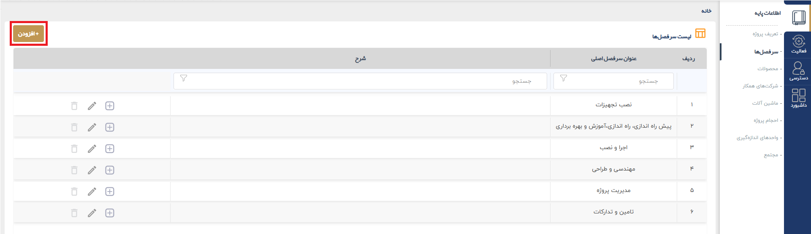

1.2.1. ایجاد یک سرفصل جدید
برای ایجاد یک پروژه جدید، ابتدا بر روی دکمه افزودن موجود در بالای سمت چپ بخش سرفصلها کلیک فرمایید.

1.2.1. ایجاد یک سرفصل جدیدبرای ایجاد یک پروژه جدید، ابتدا بر روی دکمه افزودن موجود در بالای سمت چپ بخش سرفصلها کلیک فرمایید.
 |